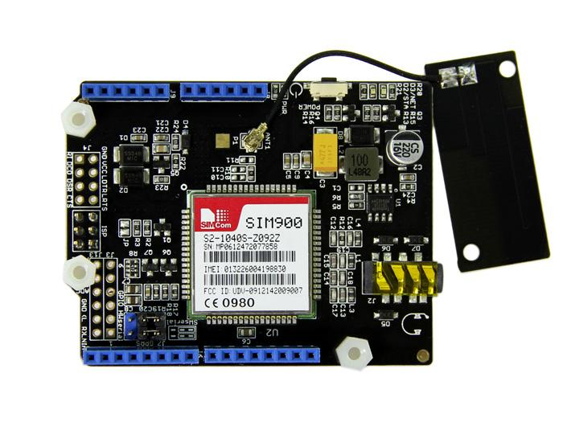

The GPRS Shield provides you a way to use the GSM cell phone network to receive data from a remote location. The shield allows you to achieve this via any of the three methods:
There are two versions for you to choose:

|
 |
Here lists the comparison between various versions of GPRS Shield that you can find on myamplifiers.com:
| Parameter | GPRS Shield V1.0 | GPRS Shield V2.0 |
|---|---|---|
| Working Voltage | +5V | +5V |
| Supply Mode | Power Jack or 5V Pin of Arduino/Seeeduino | 5V Pin or Vin Pin of Arduino/Seeeduino |
| Audio Interface | Speaker and Headphone jacks | 2-in-1 headset jack |
| Standard Shield | No | Yes |
| Antenna | mast antenna | PCB antenna |
| transit power | 0.4W | 0.8W(29dBm) |